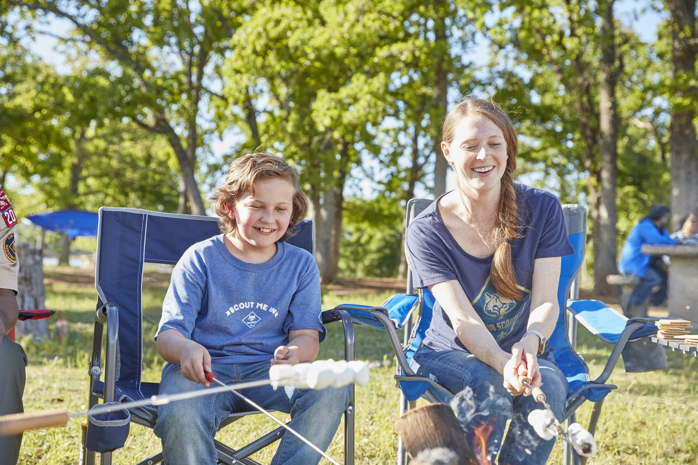
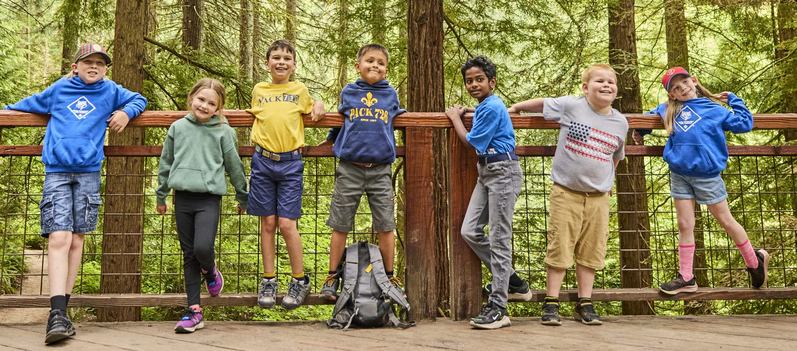
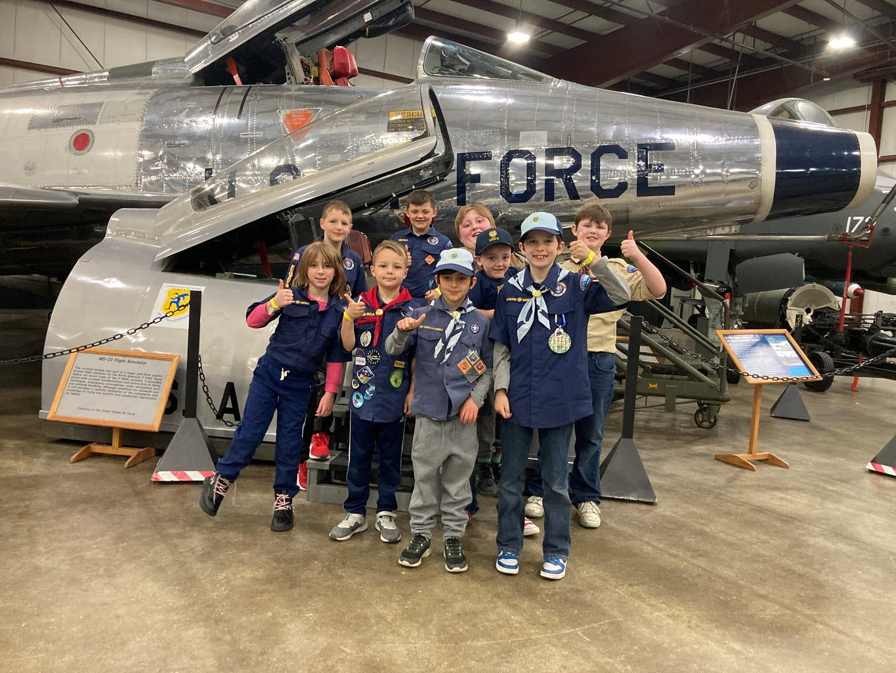
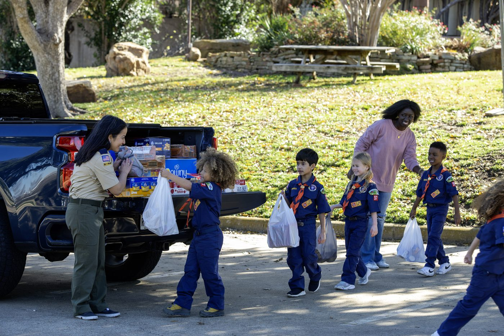
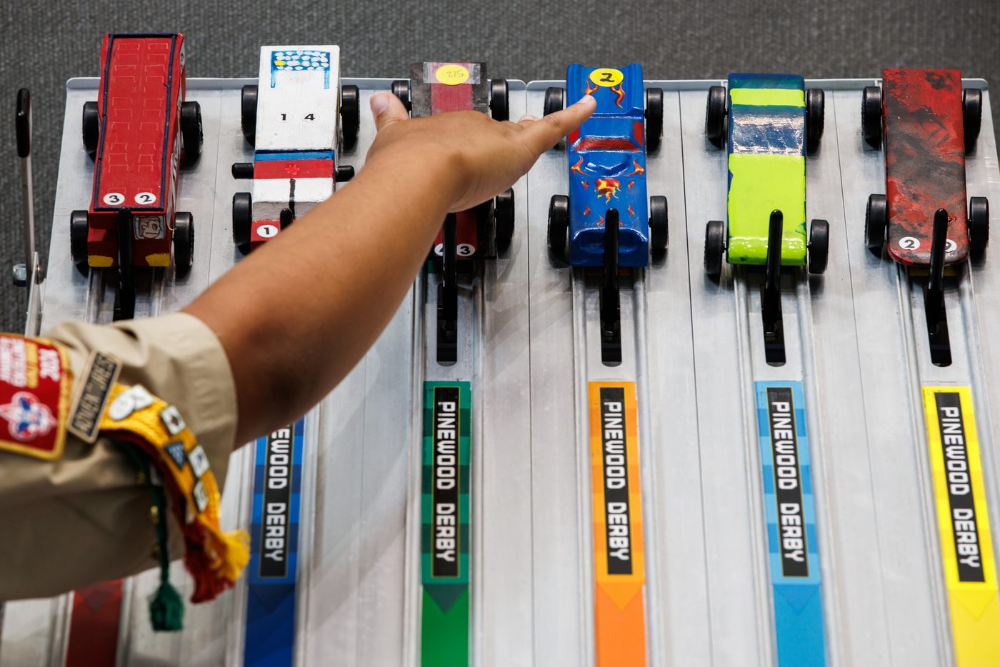
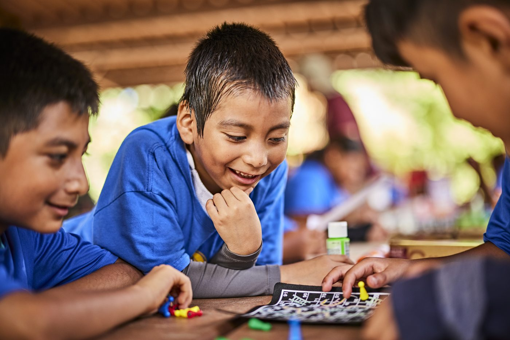
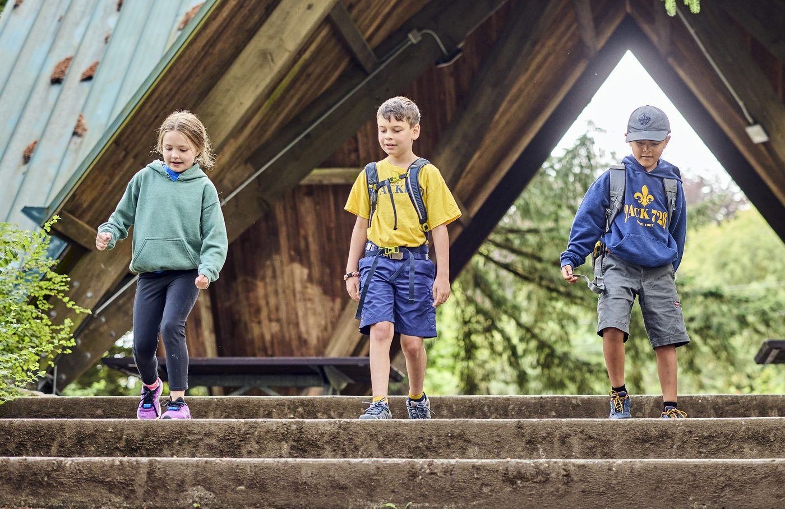

Adventure, confidence, and connection for K-5 kids in Melrose
Kids get outside, try new things, learn real-life skills, and grow more independent. Along the way, they make friends and get to know families from around Melrose.
About Pack 615
Coming up
- Sep 13 Melrose Victorian Fair booth. Come say hi!
- Sep 14, 6pm Virtual Info Night on Zoom. Add me to the Virtual Info Night. Opens the interest form in a new tab.
- Sep 18, 6pm Registration Night, Pine Banks Park
- Den meetings
- About once a month on Sunday afternoons, for 60 to 90 minutes. Your den leader sets the exact dates.
- Pack events
- The whole pack gets together 10 to 12 times a year for things like camping trips, the Pinewood Derby, a museum overnight, and service days.
- Where
- In and around Melrose, often at Pine Banks and local parks.
- Who
- Kindergarten through fifth grade.
Want more detail? Read the Parent Guide (opens in a new tab). It covers meetings, uniforms, and how registration works.
You’ll find kids here from Roosevelt, Lincoln, St. Mary’s, Mystic Valley Charter, Melrose Montessori, and other schools in and around Melrose.
Melrose’s other Cub Scout pack, Pack 635, meets on Thursdays. Pick whichever fits your family.
What we actually do

Museum sleepovers

Community service

Pinewood Derby

Games and projects

Hikes and outdoor days
What is Cub Scouts, really?
A quick look at what kids do and how families take part.
Small groups, familiar faces
Your child joins a den, a small group of kids in the same grade. The dens together form the pack.
Families take part
This is something families do together. Grown-ups join in and learn alongside their kids.
Learning by doing
Kids build, cook, hike, practice first aid, and try something a little harder each time.
All are welcome
Any kid in kindergarten through fifth grade can join. Most families show up brand new to Scouting.
A den for every grade
Kids join the den for their grade and move up together. Each grade has its own rank name.
-
Lion
Grade K
-
Tiger
Grade 1
-
Wolf
Grade 2
-
Bear
Grade 3
-
Webelos
Grade 4
-
Arrow of Light
Grade 5
Questions new families ask
Do I have to camp?
No. Camping is one part of Cub Scouts, and families choose how they take part.
Do we need to buy camping gear?
No. The pack has gear to share, and borrowing it is normal.
Does my child need to be outdoorsy?
No. Curiosity is enough.
Do I have to volunteer?
Grown-ups stay and take part. Formal volunteering is optional, but the pack runs entirely on those same grown-ups, so any help you can offer makes a real difference.
What does it cost?
About $290 a year, covering national registration and pack dues, with no required fundraising. Uniforms are separate (roughly $65 to $155 by grade), but hand-me-downs are available and the pack t-shirt is included. Financial assistance is available, and we don’t want cost to keep any kid out.
Who can join?
Any kid in kindergarten through fifth grade, no experience needed. Cub Scouts is open to all.
When can we join?
Most kids start in September when the program year kicks off, but families join all year round.
Do we have to live in a certain part of Melrose?
No. Pack 615 is based on the west side and Pack 635 on the east, but families pick whichever pack suits them, and some join us from outside Melrose.
What happens after we reach out?
A parent volunteer will email you back, usually within a day or two.
What does my child get out of it?
Practical skills, confidence trying unfamiliar things, and a small, steady group of friends.
Come and say hello.
We’ll get back to you within a day or two.